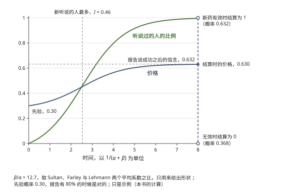

第 5 章 根模型
在预测市场（prediction market）上，一张二元合约（binary contract）在事件发生时支付 1 美元，否则什么也不付，所以它的最终价值是 0 或 1。结果揭晓之前，它的价格随着消息到来、看法改变而变动。在 Page 与 Clemen（2013）研究的 Intrade 交易所的合约里（1.3 节），离到期的时间比较短时，价格校准（calibration）得相当好，即与事件实际发生的频率相符，但对更远的将来的事件有显著的偏差。1
根模型（root model）是本书最简单的信息市场，只有一个是非事实、关于它的一条消息和一张合约。以 2.3 节的新药为例，合约在一种新药通过最后阶段的试验时支付 1 美元，价格是先验概率（prior probability）0.30。有一份报告说试验成功，这类报告有 80% 的时候是对的；听到报告的人把成功的机会定为约 0.632。在 5.3 节的条件下，20% 的交易者听说以后，价格约为 0.37，听说的人到 46% 时约为 0.45，到 80% 时约为 0.57（本书的计算；图 5.1）。
5.1 模型概要
根模型采用全部十九条默认假设（default assumption），即后面各章一次去掉一条或几条、看结论怎样变化的那些设定，这使它成为本书的参照点（本书的判断）。默认假设分四组，分别关于信息本身（A）、信息怎样传播（propagation；B）、人怎样处理信息（C），以及价格与交易（D）。它们的编号 A1 到 D6 只在本章和附录里出现；放宽（relaxation）的地图，即 5.8 节的表 5.1，列出全部十九条，每条都写明在主要放宽里去掉它的章。
根模型有四个部分（数学框 5.1）。
- 一个事实。一个是非事实 有一个真值，交易改变不了它，这就是单一外生事实（single exogenous fact；A1），合约到期时按它结算（settlement）。
- 一个来源。知情者（informed agent）得到的都是同一个信号，本书把这叫作单一信息源（single information source），当作一条候选默认（candidate default），即放在十九条编号的默认之外的一条（5.2 节）。
- Bass 形式的传播。与 Bass（1969）讲新产品首次购买的模型一样，还没听说的人，即比例为 的那部分人，从外部来源（external source），例如媒体或一份监管文件，以速率 听说，也通过口碑（word of mouth），从已经知道的人那里，以速率 听说（1.5 节；数学框 1.2）。2
- 关于 的一张二元合约。在 5.3 节的条件下，它的价格隐含概率（price-implied probability），即价格给这个事件的机会，等于财富加权平均信念（wealth-weighted average belief），即以财富为权重对交易者的信念取的平均，再加上噪声交易者（noise trader）带来的扰动；噪声交易者交易的原因与这条消息无关。知情者持有信念（belief），其余的人保持 ，没有人从价格中学习，这是不从价格学习（no learning from prices；C5）的默认，所以两群人都是新闻观察者（newswatcher）。到截止时刻 ，事实公开披露（public disclosure），合约结算，5.4 节把这两件事分开写。
第 4 章去掉了两条默认，一条是获取和处理信息不花钱，即无限注意（unlimited attention；C4），一条是总有人出于信息以外的原因交易，即外生交易对手（exogenous counterparty；D3），在 Grossman 与 Stiglitz 的例子里还连同它们去掉了不从价格学习（C5；表 5.2）。根模型把这三条都放了回来。第 4 章把价格接受者（price taker；D1）留作价值定义的前提，即没有哪个交易者的订单推动价格，根模型也保留它；第 17 章去掉它。
5.2 消息的传播
知情比例（informed fraction），即听说过这条消息的人所占的比例，从零开始，按下式增长： 只有还没听说的那 的人才能新听说。如果口碑强于外部来源，即 ，新听说的人数先升、到顶、再降， 画出一条 S 曲线（S-curve），先慢、再快、后慢；如果 ，新听说的人数从一开始就下降（1.5 节）。
这个方程代表一种情形，即消息出自单一来源，人们复制它。知情者看到的都是同一个信号，人们复制携带这个信号的消息，所以知道的人越多，其余每个人听说得越快；这种自我加速要求人们复制的东西带着信息（本书的判断）。如果人们复制的是彼此的行动，行动可以变得越来越一致，同时信息停滞不前，这就是第 14 章的信息瀑布（information cascade）。信息分散在许多人手里、要先汇集起来再用的情形，在根模型之外（第 13、14、19 章）。
本书把 读作观测（observation）外部来源的速率，这与观测律（observation law）相合，即新的知识只能来自观测（3.3 节）；Bass 把同一个系数读作人们独立于别人而采纳，两种读法给出同样的总曲线（本书的判断；1.5 节）。外部来源以恒定的速率发出同一条消息，之后再没有公告（announcement），这是一次性注入（one-time injection；B5）的默认，第 12 章去掉它。3
和 都是速率，所以都不能为负，不过 Bass 形式的回归系数可以为负。Rzayev、Sakkas 与 Urquhart（2025）用 Bass 形式拟合 77 种加密货币每天的活跃地址（active address）数。逐个币估计时，处在 位置上的系数，对比特币、以太坊和莱特币这类较成熟的币是负的，作者说这提示一种不同的动态。这些系数是对活跃程度，即每天在用的地址拟合出来的，不是根模型的速率（本书的判断；第 22 章）。4
根模型也是 Duffie 与 Manso（2007）的信息渗流（information percolation）的一个投影；在信息渗流里，人们以共同的速率在随机的时刻相遇，并汇集各自的证据。在数学框 1.2 的条件下，听说过一些东西的人，即汇集的证据不为零的人，所占的比例服从 、 为相遇速率的根模型（本书的推导），这有待附录核对（19.1.1 节）；这个投影丢掉了每个人手里有多少证据。5
对每个人来说，传播是随机的。在永久传播（permanent spreading；B3）下，知道的人从不停止转告，所以传播不可能在初期就断掉，随机性只让曲线在时间上平移（本书的推导）。在均匀混合（homogeneous mixing；B1）下，即任何人都可能遇到任何人、相遇的两个人用的是不同的来源，从单个种子出发的级联（cascade）要以不随人口增大而缩小的机会早早断掉，永久传播就得让位于自发停止（spontaneous stopping），即传播者过一段时间就不再说，不管碰到的人是否已经知道（本书的推导；6.4 节）；6.3 节与 7.2 节讨论碰到已经知道的人就停下的传播者。有外部来源时，即 ，能断掉的只有从单个种子出发的级联，整个过程永远不会断掉（本书的推导；第 8 章）。
Sultan、Farley 与 Lehmann（1990）汇集了 15 篇文章里 213 组扩散（diffusion）模型的估计，都是用年度数据拟合的。Bass 的创新系数（coefficient of innovation）和模仿系数（coefficient of imitation）处在 和 的位置上，平均是 .03 和 .38，不过数值相差很大。把它们读作根模型的速率，用来给出曲线的形状和时间尺度（time scale），这是本书的判断，本章没有引用它们在消息上的估计；拟合出来的模仿系数混有营销和其他外部影响，所以不能读作口碑的强度（本书的判断）。按这种读法，两个均值给出的模仿系数与创新系数之比约为 12.7，时间尺度 约为 2.4 年，新采纳的人最多是在约 6.2 年时（本书的计算），这是按作者的峰值公式算的，不过他们印的是 5.3 年。在他们表 2 的单一因素各格里，这个比值约在 5 到 20 之间，峰值在第 3.4 到 6.6 年，峰值时已有 40% 到 47% 的人采纳（本书的推导）。6
适用边界 这些估计只含取得过一定市场成功的新产品，用年度的首次购买数据拟合。5 到 20、3.4 到 6.6 年和 40% 到 47% 这几个范围，是本书由表 2 单一因素的各格换算出来的（本书的推导）；作者没有报告 213 组估计的分布。模仿系数混有营销和其他外部影响，不能读作口碑的强度。这里引的峰值时间是 6.2 年，出自作者自己的公式；论文印的是 5.3 年。
5.3 价格规则与它的限定
财富相等、先不管噪声交易者的需求时，时刻 的价格是 在 Wolfers 与 Zitzewitz（2006）的模型里，价格是信念的财富加权平均，条件是交易者把价格当作给定、没有对冲的动机，并且具有对数效用（log utility），即按财富的对数来评价财富（工作论文版）。这条规则另外假定财富相等并且固定不变，这是默认的对数效用（D2）的一部分；有噪声交易者（D3）；事实与总体风险无关（fact unrelated to aggregate risk；D5），总体风险（aggregate risk）即整个市场的风险；不从价格学习（C5）；允许卖空（short selling），这是无摩擦交易（frictionless trading；D4）的一部分。1.5 节推导了这条规则，它有六处限定。7
- 它要求能够卖空，即卖出借来的股票。在 Miller（1977）的设定里，即卖空受限、看法各异的市场里，价格可以高于平均信念（本书的判断；20.1.3 节）。
- 它是知晓进入价格的三种渠道之一，另外两种是知道一只股票的投资者之间的风险分担（risk sharing）（工作论文版），以及 Miller 的假说，即在这样的市场里，知晓会抬高价格（1.5 节）；19.3.6 节把三种渠道并排比较。在根模型的价格里，每个人最初的信息所占的分量，即它的影响力权重（influence weight），由财富决定；在网络上反复平均意见的模型里，它由网络位置决定（第 13 章），在加上价格的 Pedersen 模型里，它由思想领导力（thought leadership）决定，即本人的财富份额加上朴素者给他的关注（19.3.4 节）；两者都未必与信息的精确程度相符（本书的判断）。
- 价格随知情比例连续移动，这是一条本构假设（constitutive assumption），即模型为价格怎样回应人们知道的东西而选定的规则，可以换成别的规则（1.5 节）。按 Abreu 与 Brunnermeier（2003）那样的规则，知道的人已经多到足以纠正错价以后，价格可以停着不动（1.6.3 节；第 21 章）。
- 它假设只有一个市场、一个公开价格，本书把这条候选默认叫作集中交易与公开价格（centralized trading with public prices）。在 Duffie 与 Manso 的私下拍卖里，出价只把信息透露给参加拍卖的人，所以交易本身就在传播信息（第 19 章）。
- 它假定噪声交易者的需求对任何人都不可预测，这是外生交易对手这条默认。如果公开的内容能预测这种需求，而它给价格的推动后来又退了回去，那么知道未来的价格也可能赚钱（本书的判断；2.5 节和 4.1 节）。
- 它没有摩擦，所以预测市场的校准差距不能直接读作 与 之差，要先扣掉资金占用的成本、手续费和买卖价差（bid–ask spread），买卖价差即最高的买价与最低的卖价之差（1.3 节；第 18 章）。8
知道、行动和价格是三个量，要分开来测、分开来建模。根模型把它们绑在一起，因为知情者一知道就按 交易，价格随知情比例移动。知道的人仍可能不行动，原因至少有五种（本书的判断）。一是信念阈值（belief threshold），即要等从几个来源都听到（第 11 章）；二是策略性择时（strategic timing），即等到足够多的人知道、足以纠正错价，同时又想抢先动手（第 21 章）；三是摩擦阈值（friction threshold），即温和的消息抵不过固定的交易费用（trading costs；第 21 章）；四是等别人先动（waiting to learn），从先动手的人那里学习（第 14 章）；五是注意周期（attention cycle），即任何时刻只有一部分投资者在场决策（第 19 章）。
5.4 模型的预言
对价格规则求导，得到它的漂移（drift）， 所以对知道 、 和 的人来说，价格的路径是可以预测的；新听说的人最多时，价格动得最快（图 5.1）。没有哪个市场报告 ；搜索次数和其他关注度（investor attention）数据是可能的替代，使用时要留意第 10 章讲的问题（本书的判断）。价格带着噪声，所以可预测的那部分是统计套利（statistical arbitrage），即平均而言赚钱、每一次都有风险的交易。它不违反无套利律（no-arbitrage law），按这条律，单靠公共信息（public information）得不到不冒风险、不占本钱的收益（3.7 节），这一点有下面几条限定。
- 风险的市场价格（market price of risk），即每多承担一单位风险多出的预期收益，必须平方可积（square integrability），即它的平方对时间累加起来是有限的。这个条件是类比着 Harrison 与 Kreps（1979）的定理 3 借来的；它并非直接套用这条定理（本书的判断；数学框 5.1）。
- 根模型在 结束，持有到 的人只承担 的风险，不承担转售价格的风险，这隐含持有到信息公开（holding until disclosure）这条候选默认（本书的判断）。必须在消息公开之前卖出的持有者，承担的是转售价格的风险，这是噪声交易者风险（noise trader risk）的一种，即噪声交易者先把价格推得更偏的风险（本书的判断；第 23 章）。
- 有摩擦时，没有风险的可预测走势也可以不构成套利，只要它留在摩擦划出的一个区间里；Jouini 与 Kallal 的两个例子分别给出这个区间的两半。有买卖价差时（1995b），价格在某一点上波动率为零、漂移又不等于无风险利率，没有摩擦时这构成套利（arbitrage）；只要买价严格低于卖价，这样的价格就不提供套利。卖空者要付出以收益率计的成本 时（1995a），一种证券即使在较好的状态下收益也低于贷出利率，只要这个差额小于 ，它就不提供套利，这由他们的条件推出（本书的推导）。有风险的漂移不受这个区间的约束（本书的判断）；根模型没有摩擦，这个区间在去掉无摩擦交易的地方起作用（第 20、23 章）。9

漂移来自后听说的人的订单，他们在关于 的消息传到时据此交易，所以知道 的人就知道接下来谁会买（本书的判断）。4.1 节把这叫作关于订单流（order flow）的信息，订单流即买单与卖单的净额。4.1 节的拉盘（pump），即事先宣布的集体买入，是根模型对价值的说法的一个反例；根模型只计关于 的信息，所以假设了持有到结算（holding to settlement），或者噪声需求不可预测，而先买的人知道后来买家的订单，手里没有关于币值的任何信息（本书的判断；4.1 节）。
结算，即合约按 的结果兑付，不管谁在看，都清掉全部信息；公开披露只经由看到它的人进入价格（本书的判断；1.5 节）。所以，截止时刻若指结算，就不依赖无限注意，若指披露，就依赖无限注意（第 10、12 章）。
价值按 4.2 节的两种定义来算。定义一是一个信号在同样的价格下、相对公开可得的信息（publicly available information）的价值，按这个定义，根模型给出的恰好是信息量（amount of information），因为二元合约相当于只有两匹马的赛马，即按庄家不抽成的赔率对任一结果下注，而且按构造就是完备的，这隐含了完备市场（complete market）这条候选默认（其余前提见 4.2 节）。定义二是持有正确的信念对着价格下注，它多出价格自己的误差 ，来自决定价格的人已经看到、但没有正确消化的消息；相对同样的信息来衡量，两者恰好相差这一项，只有价格校准时两者才相等（数学框 5.1）。根模型还假设公众不能从价格中推出 （数学框 1.1）。
5.5 适用范围与时间尺度
根模型最适合三种情形（本书的判断；1.5 节），即软信息（soft information），也就是难以量化的信息；私人信息（private information）；以及很少有人注意的资产。四个时间尺度，即一个过程走完它大部分进程所需的时间，标出了根模型适用范围的边缘，每一个都在口碑之外（本书的判断）。对广播消息的第一反应和拉盘里的延迟，来自注意力（attention）和下单执行；盈余消息之后的漂移何时发生，部分取决于公告的日历；恢复的速度，取决于资本何时在场交易。传播自身的时间尺度 ，按成功新产品的平均系数、读作根模型的速率，约为 2.4 年（本书的计算；5.2 节）。
Busse 与 Green（2002）录下了 CNBC 2000 年 6 月 12 日到 10 月 27 日的两档分析师个股点评节目。他们发现，节目正面评论的股票，价格在第一次提到之后几秒钟就开始反应，并持续反应了大约一分钟。10
适用边界 这只对下午节目的 125 条正面报道成立；上午节目的正面报道之后，第一分钟的收益平均只有 6.8 个基点，下午节目之后是 41 个基点，上午的半小时累计收益为负。下午节目之后，价格在 15 秒内开始反应，约一分钟完成。80% 以上的报道说的是纽约证交所市值前两个十分位的公司，所以作者说他们的结果是价格对信息反应速度的上限。负面报道之后约 15 分钟的反应只依据上午 19 条、下午 23 条报道，共 42 条，并且可能是对其他负面公开消息的逐步反应的一部分，所以本书不把它读作传播的速度。2000 年的报价单位和执行速度与今天不同。
在 Dhawan 与 Putniņš 研究的两家交易所 2017 年和 2018 年的 355 次拉盘里，信号发出后价格平均约八分钟见顶，中位数（median）是 1.54 分钟（工作论文版的数字；4.1 节）；价格冲击（price impact）能否解释峰值的大小，本书还没有检验。Bernard 与 Thomas（1989）在 1974 年到 1986 年纽约证券交易所和美国证券交易所的股票里测了盈余公告后漂移（post-earnings-announcement drift），即价格在几个月里朝盈余意外的方向移动；假设漂移全部发生在 480 天之内，小公司约 100% 的漂移发生在九个月之内，大公司在六个月之内；用另外测得的输入来解释漂移在什么时候发生，本书还没有检验。Duffie（2010）写道，新资本的到来在电子限价订单簿里可以延迟几分之一秒，在巨灾风险保险里可以延迟几个月；在他关于慢资本（slow-moving capital）的简单示例模型里，价格随着这些资本的到来从供给冲击中恢复，他模型里的恢复时间本书还没有检验。
5.6 S 曲线的四类来源
Young（2009）把扩散模型分成传染（contagion）、社会影响（social influence）和社会学习（social learning）；主要由价格、质量这类外部因素驱动的模型，有时叫作移动均衡（moving equilibrium）模型，它们取决于这些因素怎样变化（工作论文版）。本书把这类模型算作 S 曲线的第四类来源，并靠足迹区分这四类，因为单凭拟合分不出来（本书的判断）。11
- 传染。人们与已采纳的人接触就采纳（工作论文版），就像在根模型里那样，时间尺度接近 ；Bass 的模仿项属于这一类（本书的判断；5.2 节）。外部影响为正、各人的速率可以不同但都不随时间变时，相对危险率（relative hazard rate），即新采纳的量除以已采纳的比例与还没采纳的比例之积，是下降的，所以这个过程过了采纳一半的那一点就不能再加速（工作论文版的数字）。
- 社会影响。群体里有足够多的人已经采纳，人们就跟着采纳（工作论文版）。纯粹由社会影响驱动的采纳如果一开始加速，通常会有一段时间比指数增长还快，并在接近阈值分布的第一个不动点时渐渐停下，到那里，采纳不再带动新的人（工作论文版）。
- 社会学习。先采纳的人的结果让人们信服了，他们就采纳（工作论文版）。纯粹由社会学习驱动的采纳通常起步很慢，一开始甚至可能减速，它的速度随预期收益上升（工作论文版）。
- 移动均衡。采纳只取决于外部因素的当期值，因素回落时采纳也回落（本书的判断）。
足迹指三件事，即公开披露会不会把曲线截断，外部因素回落时采纳会不会回落，以及采纳是否只跟着这些因素的当期值走；相对危险率上升，指向阈值、学习或变化的外部来源（本书的判断）。比指数还快的增长本身不能排除传染，因为 Young 的命题 1 只涉及相对危险率，而且因人而异的传染可以增长得这么快（本书的推导）。检验曲线的形状，需要固定的外部来源和从一开始就有的高频数据；随价格变动的外部来源，必须先测出来（本书的判断；第 22 章）。
在 DeGroot 学习（DeGroot learning）里，人们听取社交网络里其他人的看法来更新自己的信念，做法是取加权平均。没有 这一项，一种看法传得多快与持有它的人有多少无关，所以这种口碑不会自我加速（本书的判断；第 13、19 章）。
5.7 第一个范式切换
去掉不从价格学习（C5）是本书的第一个范式切换（paradigm switch），即要换状态空间（state space）或均衡（equilibrium）概念的放宽，这里换的是后者，因为这时信念取决于它们参与决定的价格（本书的判断）。
新的均衡未必揭示更多。在 Manski（2006）的预测市场里，交易者是风险中性（risk neutrality）的价格接受者，信念各不相同，预算与修正后的信念相互独立，每个人看到价格后修正自己的信念，修正后仍在价格的同一侧，例如把自己的信念与价格平均；于是“用后验信念算出的均衡价格与用先验信念算出的相同”（工作论文版）。塌缩成完全揭示（full revelation），即价格表达出所有人的私人信息，只有在交易者以理性预期（rational expectations）的方式学习时才会发生，这种学习从价格推断别人知道什么，并且有共同先验（common prior）和贝叶斯法则（Bayes’ rule）（本书的判断；数学框 5.2）。12
有了这样的学习，再把噪声交易者（D3）也去掉，Grossman（1976）发现，均衡价格汇总了市场里的全部信息。这种完全揭示需要八条前提，列在数学框 5.2 里，其中有常绝对风险厌恶（constant absolute risk aversion），即对风险的厌恶不随财富变化，加上正态分布；已知的总供给，不带噪声；以及价格接受。它描述的是噪声消失时的极限，Hellwig（1980）证明，供给噪声（supply noise）小时，Grossman 的结果近似描述了经由市场的信息传递，而没有噪声时，“这个传递过程根本就没有明确的定义”。Milgrom（1981）补充说，“通向这类均衡的天真机制可能极易受人操纵（manipulation）”，甚至单个交易者就能操纵它。
在根模型里，这种塌缩会是一次中继，价格把知情交易者共同的 传给其余的人。从价格推出 需要 （数学框 5.1），但没有噪声、 又是两个已知值之一时，价格从 出发往哪个方向动，就揭示了是哪一个（本书的推导；数学框 5.2）。所以，不确定性只有一维、未知情的公众又知道 ，这两点只有在保留噪声时才影响揭示怎样进行（本书的推导）。
只去掉噪声交易者、不以理性预期的方式学习，仍然会有交易，即 4.4 节那种天真的情形；无交易定理（no-trade theorem）需要那里列出的每一条前提。有这样的学习又没有噪声时，每个交易者的均衡需求只取决于价格，收集信息的私人动机也就没有了。
理性预期需要保留噪声，根模型有噪声（本书的判断）。在有噪声的大市场里，价格只反映许多人共有的信息，个人分不清收益高还是供给低，所以除了价格，也用自己的信号。这是部分揭示（partial revelation），即价格只显示已知信息的一部分。这时揭示怎样进行，取决于未知情者（uninformed agent）面对几个未知量（本书的判断），即 （或 ）、，以及到底有没有消息，最后一个 Easley 与 O’Hara（1992）称为事件不确定性（event uncertainty）（第 17 章）。在 Avery 与 Zemsky 的模型里，随着不确定性的维数增加，羊群行为（herding），即许多人做同样的事，没有各自独立判断，会变得普遍（工作论文版）。有三个未知量、一个价格时，根模型里的揭示可能既不瞬间完成，也不单调（本书的推导）；这个问题仍然没有解决，还没有对照第 16、19 章的模型核对。
要到达 Andrei 与 Cujean（2017）的模型，还要再做四处改动，见数学框 5.2（本书的判断）。一是信号在随机相遇中汇集，这样就没有知情比例，也没有 S 曲线；二是常绝对风险厌恶；三是风险溢价（risk premium）；四是从价格推断，取代一阶知识（first-order knowledge；A3），即只知道事实本身。他们的相遇是均匀随机的，所以均匀混合保留下来（本书的判断）。在他们的模型里，动量（momentum），即近来涨得多的继续上涨，需要信息以递增的速率流动；数学框 19.3 把根模型的 Bass 曲线放进这个条件，这是本书自己的建模（本书的推导）。第 19 章把这条路线与 Pedersen（2022）的路线放在一起比较；把真实的传播过程接到价格上，仍是本书的一个开放问题（open problem；第 19、21 章）。
5.8 放宽的地图
表 5.1 列出十九条默认假设，表 5.2 列出由交叉放宽（joint relaxation）得到的已知模型，交叉放宽即在一个模型里同时去掉两条或更多默认。附录列出本书依据的论文里一起去掉的全部 160 对默认（本书的计算）。13
表 5.1 十九条默认假设
| 编号 | 白话名字 | 默认 | 在哪几章去掉 |
|---|---|---|---|
| A1 | 单一外生事实 | 只有一个事实，交易不改变它的真值 | 13、16、20、21、22、23（10） |
| A2 | 无偏传递（unbiased transmission） | 消息原样传下去，不管它真不真、新不新 | 9（15） |
| A3 | 一阶知识 | 交易者只需知道事实本身 | 12、19、21 |
| B1 | 均匀混合 | 任何人随机遇到任何人；没有共享的来源 | 7（6、11、13、19） |
| B2 | 非策略转发（non-strategic forwarding） | 按固定的速率转发，不管消息值多少 | 15 |
| B3 | 永久传播 | 知道的人从不停止转告，也不会忘记 | 6、22（7） |
| B4 | 确定性平均场（deterministic mean field） | 接触速率固定，传播沿平均路径走 | 8、14、17、22（19） |
| B5 | 一次性注入 | 消息在开始时就在，外部来源恒定，之后没有公告 | 8、12、19、20、21、24（22） |
| C1 | 简单传染（simple contagion） | 听到一次就足以相信并行动 | 11 |
| C2 | 贝叶斯更新（Bayesian updating） | 共同先验、贝叶斯法则、不变的处理方式 | 13、20、24（18、19） |
| C3 | 无观察学习（no observational learning） | 人们看信号，不看别人的行动 | 14（17、21） |
| C4 | 无限注意 | 所有信息都看到、都用上，不花成本 | 4、10、24（6、12、16、19、20） |
| C5 | 不从价格学习 | 没有人从价格里读出别人的信息 | 16、19（4、14、17、20、21） |
| D1 | 价格接受者 | 没有哪个交易者的订单推动价格 | 17 |
| D2 | 对数效用 | 对数效用；财富相等且固定 | 17、18、19、22、23 |
| D3 | 外生交易对手 | 有出于信息以外原因的交易，而且不可预测 | 4、13、15、16、18 |
| D4 | 无摩擦交易 | 允许卖空；没有资金约束（capital constraint）或交易费用 | 18、20、21、23 |
| D5 | 与总体风险无关 | 完全信息时价格等于概率 | 18、19 |
| D6 | 传播者即交易者（spreaders as traders） | 传播消息的人也按消息交易 | 19（23） |
括号里的各章只在与另一条默认一起去掉时，才去掉这一条。除了这里列出的主要放宽，有几章还顺带去掉另一些默认，表 5.2 里的模型去掉的默认也可能多于它那一行写出的；每章在自己的开头或模型处写明这些放宽。
表 5.2 同时去掉几条默认
| 去掉的默认 | 得到的模型 | 章 |
|---|---|---|
| C5、D3 | Grossman（1976）：完全揭示 | 16 |
| C4、C5、D3 | Grossman 与 Stiglitz（1980）：有成本的信息（costly information）；没有噪声时，成本低于一个界限就没有均衡 | 4、16 |
| C2、C5 | Manski（2006）：信念朝价格平均，价格未必变动 | 16 |
| C4、C5 | Hong 与 Stein（1999）：用过去价格的动量交易者（momentum trader） | 16、20 |
| C3、C5 | Glosten 与 Milgrom（1985）、Avery 与 Zemsky（1998）：从订单流学习 | 14、17 |
| C3、C5、D1、D2 | Kyle（1985）：一个策略性的内幕交易者（insider）和一个做市商 | 17 |
| C2、D4 | Harrison 与 Kreps（1978）、Scheinkman 与 Xiong（2003）：卖空约束（short-sale constraint）下价格高于平均信念 | 20、21 |
| A1、A3、B5、C5、D4 | Abreu 与 Brunnermeier（2003）：乘着泡沫（bubble）的套利者 | 21 |
| B1、C2 | DeGroot（1974）：网络上的平均；Pedersen（2022）：同样的平均加上价格 | 13、19 |
| B1、B3 | 网络上的传播阈值（epidemic threshold），传播者会停下 | 6、7 |
Miller（1977）只去掉无摩擦交易里允许卖空的那一部分，交易者与根模型里一样不从价格学习，价格就高于平均信念（本书的判断；20.1.3 节）。
根模型还涉及四条候选默认，它们不在两张表里，即单一信息源（第 13、14、19 章；5.2 节）、集中交易与公开价格（第 19 章）、持有到信息公开（3.4、10.6 节；第 23 章）和完备市场（第 18 章）。
5.9 本章引用的实证证据
Sultan、Farley 与 Lehmann（1990）汇集了 20 世纪 50 年代到 80 年代发表的 15 篇文章里的 213 组估计，都用年度数据，产品都取得过一定的市场成功。Busse 与 Green（2002）覆盖 2000 年 6 月 12 日到 10 月 27 日 CNBC 的 322 条报道，Bernard 与 Thomas（1989）覆盖 1974 年到 1986 年纽约证券交易所和美国证券交易所的公司。Rzayev、Sakkas 与 Urquhart（2025）研究了 77 种加密货币，他们对每个币的估计在一份网上附录里，我们没有拿到。4.9 节和 1.3 节分别给出 Dhawan 与 Putniņš 的样本（工作论文版）以及 Page 与 Clemen 的样本；其余主要是理论。本章的五个时间尺度里，有两个作为测量（measurement）带有边界框（scope box）；另外三个，本书给出的解释还没有检验。
5.10 交易者的自查清单
没有一个问题说该买什么、卖什么，答得好也不能让一笔交易变得安全（本书的判断）。
- 一条消息还是许多信号？ 核对：人们转告的是携带新闻的同一条消息，还是每人手里一个要汇集起来的信号（5.2 节）？根模型只涵盖前一种。
- 这条曲线是传染吗？ 可检验：在 Young 的模型里，外部影响为正、各人的速率可以不同但都不随时间变时，相对危险率是下降的（工作论文版）。它若上升，就指向阈值、学习或变化的外部来源；这个检验需要固定的外部来源和从一开始就有的高频数据（本书的判断；5.6 节）。
- 漂移是谁的订单造成的？ 核对：在你之后谁会买（5.4 节）？在根模型里，是按关于 的消息交易的后听说的人；在 4.1 节的拉盘里，是响应一个信号的买家，这个信号不带关于币值的任何信息（本书的判断）。
- 哪一个钟在走？ 可检验：给价格计时，看它对你据以交易的那些播报反应多快。2000 年 CNBC 下午节目的正面报道大多说的是大公司，播出后价格持续反应了约一分钟，按作者的读法这是速度的上限（5.5 节）；如果那里的价格反应一样快，价格在播报后约一分钟内就反应完了（本书的推论）。
- 哪一条默认先失效？ 核对：在表 5.1 里找到你的市场最先打破的那条默认，读表里为它列出的那几章。
5.11 小结
- 根模型有一个是非事实，一条从单一来源复制、按 Bass 形式传播的消息，和一张二元合约。它采用全部十九条默认假设，放回了第 4 章去掉的三条，即无限注意、外生交易对手，以及 Grossman 与 Stiglitz 的例子里的不从价格学习，并保留价格接受。
- Sultan、Farley 与 Lehmann 对成功新产品的系数用的是年度首次购买数据，模仿系数混有营销；把它们读作根模型的速率，在他们表 2 的单一因素各格里，新采纳的峰值出现在第 3.4 到 6.6 年（本书的推导；5.2 节）。
- 在 5.3 节的前提下，价格是财富加权平均信念，有六处限定，其中一处是本构假设，即价格随知情比例连续移动。
- 价格的漂移来自后听说的人的订单，给知道 、 和没有人报告的 的人提供一种有风险的统计套利，在 5.4 节的限定下与无套利律相容；4.1 节的拉盘是这个模型对价值的说法的反例（本书的判断；5.4 节）。
- 2000 年 CNBC 下午节目的 125 条正面报道大多说的是大公司，播出后价格在 15 秒内开始反应，持续反应约一分钟，按作者的读法这是速度的上限。
- S 曲线有四类来源，靠足迹区分；检验形状需要固定的外部来源和从一开始就有的高频数据（本书的判断）。
- 去掉不从价格学习，价格未必变动，Manski 的前提下就是这样（工作论文版）。完全揭示需要以理性预期的方式学习（本书的判断）；Grossman 的完全揭示需要八条前提，其中包括没有噪声；Hellwig 证明，它描述的是噪声消失时的极限。
5.12 写给量化读者的数学框
数学框 5.1 根模型的符号形式
这里 是事实， 是知情比例， 和 是外部来源和口碑的速率， 是知情者的信念， 是其余的人的信念， 是价格。截止时刻是 ；1.5 节把披露的时刻写作 。Bass 的 和 在这里另有所指（数学框 1.2）；Sultan、Farley 与 Lehmann 的 和 ，即他们的创新系数和模仿系数，处在 和 的位置上（本书的判断）。14
传播。 ，，就是 Bass 的方程，数学框 1.2 解过它。这里的 改指无量纲的时间 ，记 ， 所以形状由一个参数 决定（本书的推导）。在这种单位下，Bass 的峰值出现在 ，这时 ，；只有 时才有 （本书的推导）。按 Sultan、Farley 与 Lehmann 的平均系数，，所以 ，；乘以 年，峰值约在 6.2 年时出现（本书的计算；5.2 节）。
价格。 在 5.3 节的前提下，。反过来，，这需要知道 （本书的推导）。信念差（belief gap）是 （1.5 节）。
漂移。 ，在 处绝对值最大（本书的推导）；在图 5.1 里，那里的 （本书的计算）。
价值。 二元合约是按无抽水（margin-free odds）的赔率下注的两匹马赛马；在这里，定义一是 ，即给定 时的赛马等式（数学框 4.1）。定义二是 ，取 时，两者恰好相差 （本书的推导；数学框 4.1）。
平方可积。 对扩散模型，Harrison 与 Kreps 的定理 3 给出等价鞅测度（equivalent martingale measure）存在的条件，等价鞅测度即一组概率，在它之下贴现后的价格没有漂移（3.7 节）；条件中有 和 ，其中 由 构造。他们的 满足 ，即他们的式 (5.1)，所以它是风险的市场价格取相反的符号（本书的推导），与根模型的 无关。对根模型的漂移提同样的要求，是与这条定理的类比，并非直接套用（本书的判断）。
这些表述的严格写法和证明都在附录里。
数学框 5.2 第一个范式切换的符号形式
完全揭示。 Grossman（1976）的价格汇总了市场里的全部信息，前提有八条，即 (1) 常绝对风险厌恶，，；(2) 正态的先验和正态的信号，(3) 信号的误差在交易者之间相互独立、精度相同；(4) 共同先验，并且每个交易者都知道价格怎样取决于信号，Grossman 把这一点论证为一种自我实现的预期（self-fulfilling expectation）；(5) 已知的总供给，因为供给随机时价格揭示不了平均信号；(6) 价格接受；(7) 价格的维数至少与充分统计量（sufficient statistic）一样多，充分统计量即一个概括，信号关于收益说了什么，它全都保留；(8) 作者只在信号的线性函数中证明了均衡唯一，“我们不知道”是否还有别的均衡。
极限。 供给噪声消失时，Hellwig（1980）的均衡价格成为信号的充分统计量，但在噪声为零时，Grossman 的结果不是精确的（5.7 节）。
未知量。 未知情者面对 （或 ）、 以及有没有消息，一个价格对着三个未知量；没有噪声、已知 时，无论 是多少， 都揭示是哪一个（本书的推导）。
Andrei 与 Cujean 的四处改动。 个体在强度为 的泊松时刻相遇，并汇集各自的信号；效用是指数型的（D2），风险厌恶（risk aversion）为 ，他们的 是风险容忍度（risk tolerance），与数学框 5.1 里的时间 是不同的量；价格带有补偿噪声交易风险的风险溢价（D5）；价格携带公共信息，个体从中推断别人知道什么（A3）。15
本章文献
本章引用的文献。所读版本不是期刊版的，条目里写明读的是哪个版本；尾注里的页码按所读的版本。
- Abreu, D., and M. K. Brunnermeier (2003). Bubbles and Crashes. Econometrica 71(1): 173–204.
- Andrei, D., and J. Cujean (2017). Information Percolation, Momentum and Reversal. Journal of Financial Economics 123(3): 617–645.
- Avery, C., and P. Zemsky (1998). Multidimensional Uncertainty and Herd Behavior in Financial Markets. American Economic Review 88(4): 724–748. 所读为 1996 年 11 月 1 日的 INSEAD 工作论文 96/79/FIN/SM；没有核对期刊版。
- Barron, A. R., and T. M. Cover (1988). A Bound on the Financial Value of Information. IEEE Transactions on Information Theory 34(5): 1097–1100.
- Bass, F. M. (1969). A New Product Growth Model for Consumer Durables. Management Science 15(5): 215–227. 题名页上的词序印作“A New Product Growth for Model Consumer Durables”。
- Bernard, V. L., and J. K. Thomas (1989). Post-Earnings-Announcement Drift: Delayed Price Response or Risk Premium? Journal of Accounting Research 27, Supplement: 1–36.
- Busse, J. A., and T. C. Green (2002). Market Efficiency in Real Time. Journal of Financial Economics 65(3): 415–437.
- DeGroot, M. H. (1974). Reaching a Consensus. Journal of the American Statistical Association 69(345): 118–121.
- Dhawan, A., and T. J. Putniņš (2023). A New Wolf in Town? Pump-and-Dump Manipulation in Cryptocurrency Markets. Review of Finance 27(3). 所读为 2020 年 11 月 16 日的工作论文；没有核对期刊版。
- Duffie, D. (2010). Presidential Address: Asset Price Dynamics with Slow-Moving Capital. Journal of Finance 65(4): 1237–1267.
- Duffie, D., and G. Manso (2007). Information Percolation in Large Markets. American Economic Review 97(2), Papers and Proceedings: 203–209.
- Easley, D., and M. O’Hara (1992). Time and the Process of Security Price Adjustment. Journal of Finance 47(2): 577–605.
- Glosten, L. R., and P. R. Milgrom (1985). Bid, Ask and Transaction Prices in a Specialist Market with Heterogeneously Informed Traders. Journal of Financial Economics 14(1): 71–100.
- Grossman, S. (1976). On the Efficiency of Competitive Stock Markets Where Trades Have Diverse Information. Journal of Finance 31(2): 573–585.
- Grossman, S. J., and J. E. Stiglitz (1980). On the Impossibility of Informationally Efficient Markets. American Economic Review 70(3): 393–408.
- Harrison, J. M., and D. M. Kreps (1978). Speculative Investor Behavior in a Stock Market with Heterogeneous Expectations. Quarterly Journal of Economics 92(2): 323–336.
- Harrison, J. M., and D. M. Kreps (1979). Martingales and Arbitrage in Multiperiod Securities Markets. Journal of Economic Theory 20(3): 381–408.
- Hellwig, M. F. (1980). On the Aggregation of Information in Competitive Markets. Journal of Economic Theory 22(3): 477–498.
- Hong, H., and J. C. Stein (1999). A Unified Theory of Underreaction, Momentum Trading, and Overreaction in Asset Markets. Journal of Finance 54(6): 2143–2184. 所读为 1997 年 12 月的 NBER 工作论文 6324；没有核对期刊版。
- Jouini, E., and H. Kallal (1995a). Arbitrage in Securities Markets with Short-Sales Constraints. Mathematical Finance 5(3): 197–232.
- Jouini, E., and H. Kallal (1995b). Martingales and Arbitrage in Securities Markets with Transaction Costs. Journal of Economic Theory 66: 178–197.
- Kyle, A. S. (1985). Continuous Auctions and Insider Trading. Econometrica 53(6): 1315–1335.
- Manski, C. F. (2006). Interpreting the Predictions of Prediction Markets. Economics Letters. 所读为 2004 年 3 月的 NBER 工作论文 10359；没有核对期刊版。
- Merton, R. C. (1987). A Simple Model of Capital Market Equilibrium with Incomplete Information. Journal of Finance 42(3). 所读为 MIT Sloan School of Management 工作论文 1869-87，1987 年 3 月。
- Milgrom, P. R. (1981). Rational Expectations, Information Acquisition, and Competitive Bidding. Econometrica 49(4): 921–943.
- Miller, E. M. (1977). Risk, Uncertainty, and Divergence of Opinion. Journal of Finance 32(4): 1151–1168.
- Page, L., and R. T. Clemen (2013). Do Prediction Markets Produce Well-Calibrated Probability Forecasts? Economic Journal 123(568): 491–513.
- Pedersen, L. H. (2022). Game On: Social Networks and Markets. Journal of Financial Economics 146: 1097–1119.
- Rzayev, K., A. Sakkas and A. Urquhart (2025). An Adoption Model of Cryptocurrencies. European Journal of Operational Research 323(1): 253–266.
- Scheinkman, J. A., and W. Xiong (2003). Overconfidence and Speculative Bubbles. Journal of Political Economy 111(6): 1183–1219.
- Sultan, F., J. U. Farley and D. R. Lehmann (1990). A Meta-Analysis of Applications of Diffusion Models. Journal of Marketing Research 27(1): 70–77.
- Wolfers, J., and E. Zitzewitz (2006). Interpreting Prediction Market Prices as Probabilities. NBER Working Paper 12200, April 2006；没有找到期刊版。
- Young, H. P. (2009). Innovation Diffusion in Heterogeneous Populations: Contagion, Social Influence, and Social Learning. American Economic Review 99(5). 所读为作者的定稿，即 AER 稿件 2007-1161 的第二次修改稿，2008 年 10 月；没有核对期刊版。
注释
1. Page 与 Clemen（2013），期刊版：合约的最终价值在 §4.1，第 500 页；校准与离到期的时间在摘要，第 491 页。他们的样本见 1.3 节。
2. Bass（1969），期刊版：首次购买的模型在摘要，第 215 页。
3. Bass（1969），期刊版：峰值和它的条件在第 218 页；创新者在第 216 页。
4. Rzayev、Sakkas 与 Urquhart（2025），期刊版：77 种加密货币在 §1，第 253 页；他们对每天活跃地址数拟合的式 (2) 在 §2.2，第 257 页；逐个币的估计和负的系数在 §3.2，第 259 页。估计值本身在论文的网上附录（表 A3）里，我们没有拿到。§3.2 第 258 页对每个币的逐月估计，用于他们对收益率的检验，不是这里引用的系数。本书的推导：潜在数量固定时，他们式 (2) 的右边，连同其中前一天数量和前一天收益率的项，是前一天数量的二次式，对参数是线性的，所以这个拟合就是对这个二次式的最小二乘拟合，它把截距与曲率机械地绑在一起；以与 成正比的速率退出，即放宽永久传播，添的是一个只含 的项，截距仍是 ，所以退出解释不了负的截距。
5. Duffie 与 Manso（2007），期刊版：类型和命题 3 在 §I，第 204 页；相遇的速率在 §II，第 204 页。
6. Sultan、Farley 与 Lehmann（1990），期刊版：213 组估计在第 70 页；平均系数在第 70–71 页；年度数据在第 71 页；表 2 在第 73 页；峰值公式和印出的 5.3 年在第 74 页；成功的产品在第 75 页。按他们的公式， 约为 6.2 年（本书的计算）。用普通最小二乘法（OLS）估计时，如果估计的模型包含营销变量，模仿系数低 .076，所以我们把它读作混有外部影响（本书的判断）。这里用到的表 2 的每一格取自 OLS 的几栏，是截距加上一个因素的效应，再加上同时估计创新系数时模仿系数升高的 .165（OLS；加权最小二乘法是 .170），因为 Bass 曲线两个系数都要；这些格不是任何一组研究的平均值（本书的推导）。均值系数的比值、时间尺度和峰值出自 bass_peak，三个范围出自 sultan_ranges(sultan_table2_cells())，都在 book/code/btc_pilot/bass.py 里，测试在 book/code/tests/test_bass.py。
7. Wolfers 与 Zitzewitz（2006）所读为 2006 年 4 月的 NBER 工作论文 12200；没有找到期刊版。各项假设在 §2，第 2 页；财富加权平均及其对对数效用的依赖在 §3，第 3 页。
8. Miller（1977），期刊版：论文的设定在开头一节，第 1151 页；能见度假说在第 1166 页。Merton（1987）所读为 1987 年 3 月的 MIT Sloan School of Management 工作论文 1869-87；没有核对 Journal of Finance 的版本。投资者只用自己知道的证券这一假设在第 10 页。Duffie 与 Manso（2007），期刊版：私下拍卖在 §III，第 205 页。
9. Harrison 与 Kreps（1979），期刊版：定理 3，第 396 页。Jouini 与 Kallal（1995b），期刊版：例子在 §3，第 188 页。Jouini 与 Kallal（1995a），期刊版：二项式的例子在 §2.2，第 205–206 页。在那里，一种风险证券的对数收益在状态“up”时是 ，在状态“down”时是 ，贷出利率和借入利率是 和 ；模型没有套利，当且仅当 ，并且有某个无风险利率 满足 和 。对 的证券，取 可知，这个条件成立当且仅当 （本书的推导）。
10. Busse 与 Green（2002），期刊版：结果的概述在第 416 页；样本期在第 418 页；表 1，即按节目和正负分的报道数，以及大公司所占的份额，在第 419 页；上午节目的正面报道在第 422 页；第一个 15 秒区间和对负面报道的提醒在第 423 页；对其他负面消息的逐步反应在第 427 页。Dhawan 与 Putniņš（2023）所读为 2020 年 11 月 16 日的工作论文；没有核对 Review of Finance 的版本。工作论文：按交易所分的样本及其日期在第 25 页；从信号到见顶的时间在第 26 页。Bernard 与 Thomas（1989），期刊版：样本在第 6 页；漂移发生的时间在第 11–12 页。Duffie（2010），期刊版：价格对供给冲击的反应和示例模型在摘要，第 1237 页；新资本的延迟在第 1237 页。
11. Young（2009）所读为作者的定稿，即 AER 稿件 2007-1161 的第二次修改稿，日期为 2008 年 10 月；没有核对 American Economic Review 的版本，页码按定稿：三类模型、外部因素和移动均衡（他的注 4）在第 3 页；社会影响和社会学习在第 5 页；命题 1 在第 11 页；第一个不动点在第 14 页。本书的推导：如果一小群人以很高的速率自己采纳，其余的人主要靠传染采纳，那么早期单位时间的采纳大致是一个下降的指数与一个上升的指数之和，所以它的相对加速度，即这个采纳速率的增长率，随着权重移向上升的那一项而上升，Young 把这算作比指数还快的增长。Pedersen（2022），期刊版：DeGroot 模型在引言，第 1098 页。
12. Manski（2006）所读为 2004 年 3 月的 NBER 工作论文 10359；没有核对 Economics Letters 的版本。工作论文：交易者在摘要；两条假设、他的式 (5) 和加权平均在 §3，第 7 页；不变的价格在第 8 页。Grossman（1976），期刊版：汇总全部信息的价格和失去的动机在 §1，第 573–574 页；均衡需求在 §3 的注 1，第 582 页。Hellwig（1980），期刊版：大市场在 §1，第 479 页；近似的描述和没有明确定义的过程在 §4，第 491 页；自己的信号与价格在 §5，第 493 页。Milgrom（1981），期刊版：可操纵性在摘要，第 921 页；单个交易者在 §1，第 923 页。Easley 与 O’Hara（1992），期刊版：事件不确定性在引言，第 578 页。Avery 与 Zemsky（1998）所读为 1996 年 11 月 1 日的 INSEAD 工作论文 96/79/FIN/SM；没有核对 American Economic Review 的版本。工作论文：不确定性的维数增加在 §1.2，第 4 页。Andrei 与 Cujean（2017），期刊版：动量的条件在摘要，第 617 页。
13. 本书的计算：只要本书读过的论文里至少有一篇，它的卡片把两条默认都记为放宽，就算一对；数目取自本书按各张卡片整理的放宽汇总，2026 年 10 月 27 日重新生成。
14. Bass（1969），期刊版：方程即假设 b)，第 217 页；解和峰值在第 218 页，峰值时的销量与累计销量在第 218–219 页。Barron 与 Cover（1988），式 (42)，第 1100 页。Harrison 与 Kreps（1979），期刊版：式 (5.1)，第 395 页；定理 3，第 396 页。
15. Grossman（1976），期刊版：效用，即他的式 (5)，在 §2，第 575 页；自我实现预期的均衡在第 577 页；信号和先验在 §3，第 577 页；价格接受和价格体系的维数在第 582 页；唯一性和随机的供给在第 583 页。Hellwig（1980），期刊版：噪声消失与精确的结果在 §4，第 490–491 页。Easley 与 O’Hara（1992），期刊版：事件不确定性在引言，第 578 页。Andrei 与 Cujean（2017），期刊版：价格作为公共信息在 §1，第 618 页；相遇和交换的信号在 §2，第 619 页；效用在第 620 页；价格的折价在第 622 页。